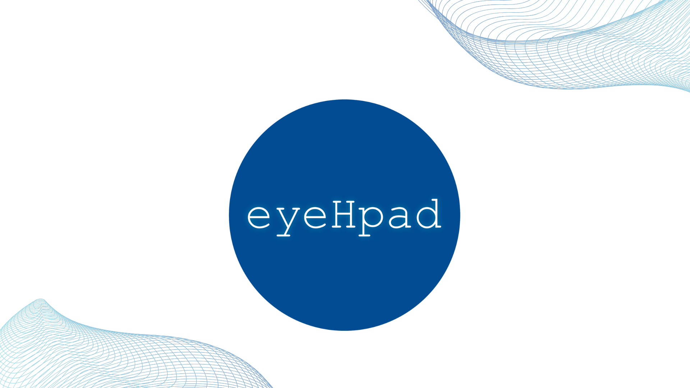
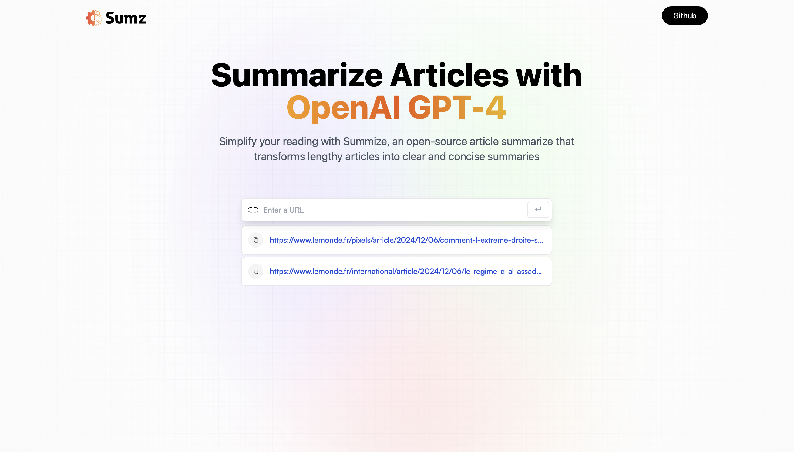

- Besoin
- Aider les enfants diabétiques à gérer leur glycémie au quotidien, sans en faire une source d'angoisse.
- Arbitrage
- L'exigence médicale du suivi face à l'âge et à l'autonomie de l'enfant.
- Réponse
- Une application qui mêle éducation, autonomie et douceur.
Mariam Tounkara, ingénieure et designer
Le bon problème avant la bonne solution.
Je transforme des besoins flous en solutions claires, en faisant le lien entre le métier, la technique et les utilisateurs.
Mon CV (PDF)
Stage de fin d'études en business analyse
à partir du 3 mai 2027
Étude de cas
MediTrack : pourquoi les patients abandonnent leur application de suivi
Une application de suivi de traitement chronique perd ses utilisateurs après quelques semaines, alors qu'ils continuent de prendre leurs médicaments. J'ai repris le sujet de zéro, comme le ferait un Business Analyst.
Le problème n'était pas l'oubli. C'était la motivation sur la durée.
- 01Cadrage et persona
- 02Benchmark Medisafe et Strava
- 03Entretien et 8 besoins tracés
- 047 exigences et contraintes RGPD
- 05User stories et critères d'acceptation
- 06Priorisation MoSCoW
- 07Processus cible en BPMN
- 08Roadmap en 3 releases
Projets
Projets d'école
-

-

- Besoin
- Soulager le personnel des EHPAD et rassurer les familles.
- Arbitrage
- Veiller sur les résidents sans porter atteinte à leur dignité ni à leur vie privée.
- Réponse
- Des caméras thermiques et un logiciel qui analysent des données de santé à distance.
-

- Besoin
- Simplifier les courses pour des clients aux profils très différents.
- Arbitrage
- Un petit écran pour des usages variés : il fallait choisir ce qui compte vraiment.
- Réponse
- Une interface intégrée au caddie, conçue pour la diversité des utilisateurs.
-

- Besoin
- Gagner du temps de lecture sur des articles longs.
- Démarche
- Comprendre de l'intérieur ce qu'une API d'IA sait faire, et où elle s'arrête.
- Réponse
- Une application React qui résume des articles avec l'API d'OpenAI.
-
Phase de recherche. Présentation prévue en avril 2027.
Compétences
Analyse
- Recueil de besoins et entretiens
- Benchmark
- Spécifications fonctionnelles
- User stories, MoSCoW
- BPMN, roadmap
Design
- Recherche utilisateur, persona
- UX et UI design
- Figma, prototypage
- Facilitation graphique
Technique
- Python, R
- SQL
- HTML, CSS, JavaScript, React
- Java
- API
Aussi : Photoshop, Illustrator, InDesign, After Effects, Premiere Pro, Notion.